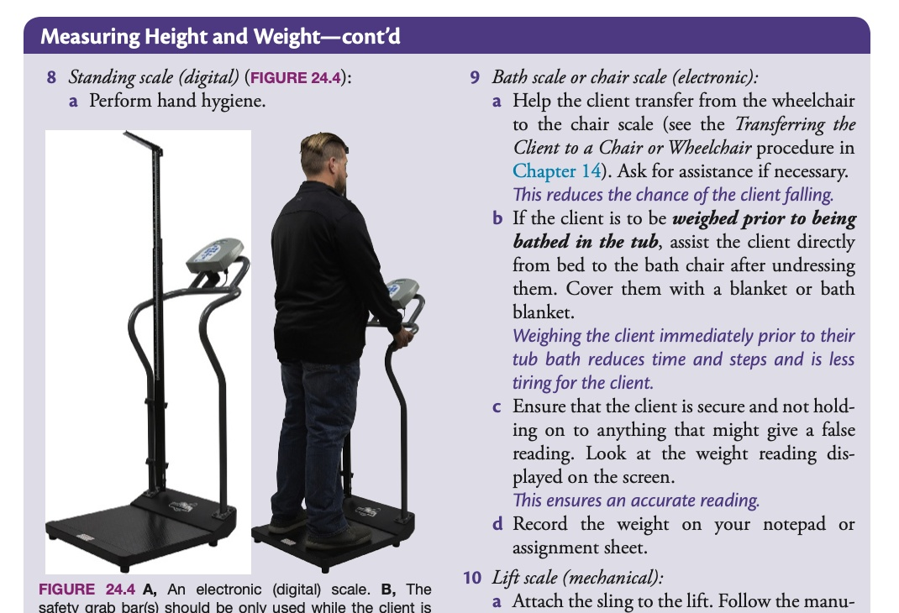
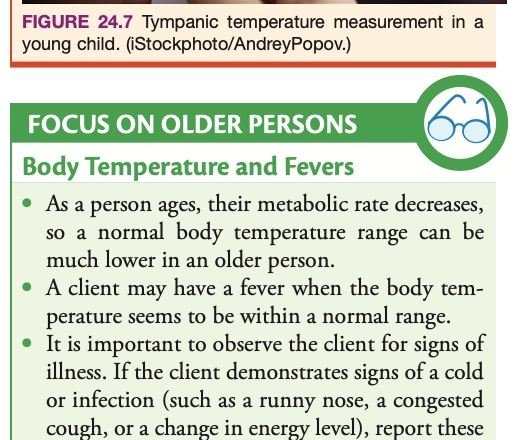
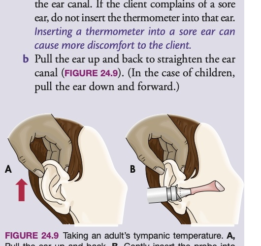
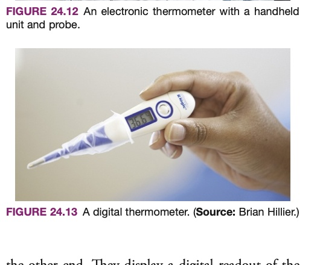
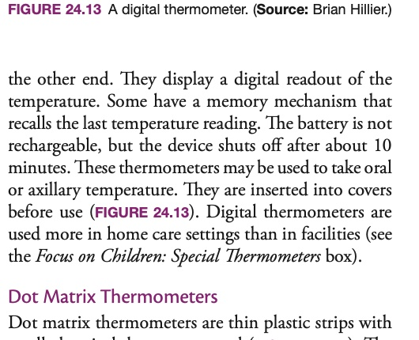
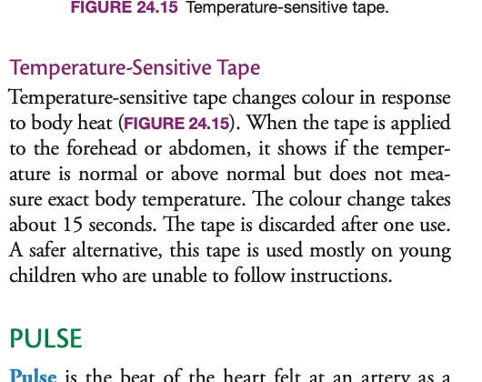
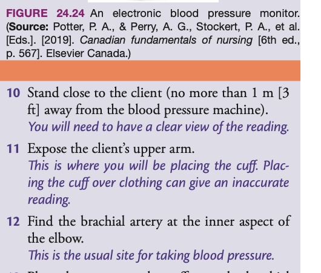

After reading this chapter, the learner should be able to do the following: / 完成本章研读后，学习者应当全面掌握并能够独立达成以下 14 项临床专业胜任目标：
• Explain how to measure height and weight.
阐明准确测量照护对象身高与体重的标准流程与操作要领。
• Explain why vital signs are measured.
阐述在临床与社区支持照护中监测生命体征的根本目的与医学意义。
• List factors that affect vital signs.
系统列举影响人体各项生命体征（体温、脉搏、呼吸、血压）的内外生理病理因素。
• Identify the normal ranges for temperature sites.
熟练识记人体不同测温部位（口腔、直肠、腋窝、鼓膜、额颞动脉）的正常体温参考范围。
• Know when to use each temperature site.
准确评估并掌握不同测温部位的临床适应证与绝对禁忌证。
• Identify why the older person’s normal body temperature range may be lower than a younger adult’s range.
深入分析由于生理衰老导致老年人基线基础体温普遍偏低的核心解剖生理机制。
• Identify the sites for taking a pulse.
精准指认全身常用脉搏触诊部位（如桡动脉、颈动脉、心尖脉、股动脉等）的解剖定位。
• Describe what a pulse oximeter does.
详尽描述脉搏血氧饱和度仪（Pulse Oximeter）的工作原理与临床监测功能。
• Describe the correct manner of using a pulse oximeter.
规范掌握脉搏血氧仪探头的正确安放、读数解读以及误差干扰排除方法。
• Describe normal respirations.
准确描述健康成人正常自主呼吸的频率、深度、对称节律及声音特征。
• Describe factors that affect blood pressure.
详尽剖析年龄、性别、情绪、体位、运动及心血管病理等对动脉血压的调控机制与影响。
• Describe the practices to follow when measuring blood pressure.
全面遵循测量动脉血压时的标准临床规范（肢体选择、静息时间、袖带规格与放气速率）。
• Know the vital sign ranges for different age groups.
熟练掌握跨全生命周期（新生儿、幼儿、学龄期、成人、高龄老年人）的生命体征常模范围。
• Perform the procedures described in this chapter.
严格遵照无菌操作与支持照护规程，规范执行本章涵盖的身高体重及四大生命体征测量技能。
p. 529
VITAL SIGNS: CORE PHYSIOLOGICAL INDICATORS
生命体征：核心生理机能的晴雨表
The vital signs of body function are temperature, pulse, respirations, and blood pressure. Some people also consider basic assessment and observation of pain to be a vital sign (see Chapter 23). It may also include oxygen saturation levels (SpO2), which will require special training by your employer.
Vital signs reflect the function of three body processes essential for life: (1) regulation of body temperature, (2) breathing, and (3) heart function. Measuring and recording vital signs, as well as height and weight, provide important information for the care-planning process.
Professional Practice: Scope of Care & Immediate Reporting · 执业规范：执业范围界限与异常数据即时通报原则
Your job description will tell you the vital signs that you are approved to perform on your client. Usually, support workers can measure and record temperature, pulse, and respirations, and, in some agencies or facilities, oxygen saturation levels (SpO2). It is beyond the caregiver’s scope of practice to offer any treatment (such as withholding or giving medication) based on a client’s vital sign reading. However, it is very important that you report any changes in your client’s vital signs to your supervisor immediately.
你的岗位职责说明书（Job Description）会明确规定你在机构或社区被授权为案主执行的具体生命体征测量项目。通常情况下，支持工作者被授权测量并记录体温、脉搏与呼吸频率，部分机构亦授权进行外周血氧饱和度（SpO2）检测。严正声明：根据生命体征测量数值自行给予、调整或擅自停用任何处方药物及治疗干预，彻底超出支持工作者的法定执业范围（Beyond Scope of Practice）。然而，一旦发现案主的生命体征出现任何显著偏离基线或异常改变，必须以最高的紧迫度立即向主管护士（Supervisor）汇报！
MEASURING HEIGHT AND WEIGHT
测量身高与体重
Height and weight are measured sometimes daily, weekly, or monthly as part of a client’s care plan. Clients who must have their weight monitored may be cared for in a facility or in their home. Some clients may be weighed daily when there is concern about fluid retention (e.g., in congestive heart failure) and to monitor weight gain or loss.
It is important to weigh the client at the same time of day for daily, weekly, or monthly measurements and to use the same scale. Before breakfast is the best time to weigh the client, as food and fluids add weight. The client should wear only a gown or pyjamas when being weighed, as clothes add weight. Shoes or slippers add to the weight and the height. Also, have the client void (urinate) before being weighed, as a full bladder also affects weight measurement. If a urine specimen is needed, it can be collected at this time.
The beat of the heart felt at an artery as a wave of blood passes through the artery.
脉搏；随着心脏周期性心室收缩泵血，在浅表动脉管壁上传导并被触知的心搏血流脉动冲击波。
pulse oximeter
脉搏血氧仪p. 543
A device that measures both a client’s pulse rate and the oxygen level in the blood.
脉搏血氧仪；一种利用光电比色技术无创同步测定案主脉率和动脉血氧饱和度的便携式医疗监护设备。
pulse rate
脉率p. 540
The number of heartbeats or pulses felt in 1 minute.
脉率；在连续 1 分钟（60 秒）时间内在浅表动脉处触及的脉搏搏动总次数。
respiration
呼吸p. 544
The act of breathing air into (inhalation) and out of (exhalation) the lungs.
呼吸；机体经胸廓起伏将外部空气吸入肺泡（吸气）并将肺内二氧化碳排出体外（呼气）的换气动作。
sphygmomanometer[SFIG-moh-muh-NAHM-eh-ter]
血压计p. 547
The instrument used to measure blood pressure.
血压计；临床用于充气阻断并测定动脉内血液侧压力的专用器械（包含无液气压表、水银柱或电子传感模块）。
SpO2
经皮外周毛细血管血氧饱和度p. 543
Peripheral capillary oxygen saturation; the reading given by a pulse oximeter for the percentage of oxygen-saturated hemoglobin that is dissolved in the blood.
经皮外周毛细血管血氧饱和度；脉搏血氧仪测得的、结合氧气的氧合血红蛋白占全部血红蛋白总量的百分比。
stethoscope[STETH-uh-skope]
听诊器p. 548
An instrument used to listen to the sounds produced by the heart, lungs, and other body organs.
听诊器；用于传导并放大机体内部心脏瓣膜关闭声、呼吸音、血管柯氏音及肠鸣音的诊断器械。
systole[SIS-tuh-lee]
收缩期p. 545
The period of heart muscle contraction.
收缩期；心室肌处于强有力收缩状态、将血液由心室驱入大动脉的循环生理阶段。
systolic pressure
收缩压p. 545
The amount of force required to pump blood out of the heart and into the arterial circulation.
收缩压；心室收缩射血时动脉管壁所承受的最高峰值侧压力（高压）。
tachycardia[tak-ee-KAHR-dee-uh]
心动过速p. 541
A rapid (tachy) heart rate (cardia); a rate over 100 beats per minute in an adult.
心动过速；成人安静状态下脉率或心率异常增快，超过每分钟 100 次。
vital signs
生命体征p. 529
Temperature, pulse, respirations, and blood pressure (and SpO2 if possible).
The beat of the heart felt at an artery as a wave of blood passes through the artery.
脉搏；随着心脏周期性心室收缩泵血，在浅表动脉管壁上传导并被触知的心搏血流脉动冲击波。
TERM · 术语p. 543
pulse oximeter
脉搏血氧仪
A device that measures both a client’s pulse rate and the oxygen level in the blood.
脉搏血氧仪；一种利用光电比色技术无创同步测定案主脉率和动脉血氧饱和度的便携式医疗监护设备。
TERM · 术语p. 540
pulse rate
脉率
The number of heartbeats or pulses felt in 1 minute.
脉率；在连续 1 分钟（60 秒）时间内在浅表动脉处触及的脉搏搏动总次数。
TERM · 术语p. 544
respiration
呼吸
The act of breathing air into (inhalation) and out of (exhalation) the lungs.
呼吸；机体经胸廓起伏将外部空气吸入肺泡（吸气）并将肺内二氧化碳排出体外（呼气）的换气动作。
TERM · 术语p. 547
sphygmomanometer
[SFIG-moh-muh-NAHM-eh-ter]
血压计
The instrument used to measure blood pressure.
血压计；临床用于充气阻断并测定动脉内血液侧压力的专用器械（包含无液气压表、水银柱或电子传感模块）。
TERM · 术语p. 543
SpO2
经皮外周毛细血管血氧饱和度
Peripheral capillary oxygen saturation; the reading given by a pulse oximeter for the percentage of oxygen-saturated hemoglobin that is dissolved in the blood.
经皮外周毛细血管血氧饱和度；脉搏血氧仪测得的、结合氧气的氧合血红蛋白占全部血红蛋白总量的百分比。
TERM · 术语p. 548
stethoscope
[STETH-uh-skope]
听诊器
An instrument used to listen to the sounds produced by the heart, lungs, and other body organs.
听诊器；用于传导并放大机体内部心脏瓣膜关闭声、呼吸音、血管柯氏音及肠鸣音的诊断器械。
TERM · 术语p. 545
systole
[SIS-tuh-lee]
收缩期
The period of heart muscle contraction.
收缩期；心室肌处于强有力收缩状态、将血液由心室驱入大动脉的循环生理阶段。
TERM · 术语p. 545
systolic pressure
收缩压
The amount of force required to pump blood out of the heart and into the arterial circulation.
收缩压；心室收缩射血时动脉管壁所承受的最高峰值侧压力（高压）。
TERM · 术语p. 541
tachycardia
[tak-ee-KAHR-dee-uh]
心动过速
A rapid (tachy) heart rate (cardia); a rate over 100 beats per minute in an adult.
心动过速；成人安静状态下脉率或心率异常增快，超过每分钟 100 次。
TERM · 术语p. 529
vital signs
生命体征
Temperature, pulse, respirations, and blood pressure (and SpO2 if possible).
There are various types of scales: balance beam scales, chair scales, lift scales, wheelchair weigh scales, and digital scales (FIGURE 24.1). The most common weigh scale used in facilities is the weigh scale in the bathtub lift chair or the standing digital scale.
Before using any scale, you must make sure it is balanced and calibrated to zero. If the scale is not balanced before the client steps on, the reading will not be accurate.
在使用任何称重秤之前，操作者必须首先确认秤处于绝对平衡与归零校准状态（Calibrated to zero）。如果在案主踏上秤台之前指针或数显未精确归零，测得的所有体重数据都将产生系统性偏差而彻底失真。
p. 531
CLINICAL PROCEDURE · 临床操作规程
PROCEDURE: MEASURING HEIGHT AND WEIGHT (BALANCE BEAM SCALE)
标准临床操作规程：使用机械平衡杠杆秤测量身高与体重
Advocate on behalf of the client’s quality of life by promoting: Dignity · Independence · Individualized Care · Preferences · Privacy
FIGURE 24.3 Measuring height using the height rod on a balance beam scale.
图 24.3 使用杠杆秤上自带的可伸缩身高测量杆准确测量立位身高。
p. 532

FIGURE 24.4 A, An electronic (digital) scale. B, The safety grab bar(s) should be only used while the client is stepping onto the platform to maintain their balance. Once standing steadily, the client must release the bars to ensure an accurate weight reading.
Standing scale (digital) (FIGURE 24.4): Perform hand hygiene. Turn on the scale. Ensure that the scale reads 0.0 before the client steps on. Assist the client onto the platform. The client stands still with hands at their sides. Remind the client to let go of any grab bars while the weight is reading. Read the weight on the digital display and record it immediately.
Wheelchair scale: To weigh a client in a wheelchair, weigh the wheelchair empty first (or check the recorded tare weight on the wheelchair). Then assist the client into the wheelchair and wheel the chair onto the scale platform. Lock the wheelchair brakes. Read the total weight on the digital display. Subtract the weight of the empty wheelchair from the total weight to obtain the client’s actual weight. Many modern digital wheelchair scales have an automatic tare function that does this calculation automatically.
Lift scale: Follow the manufacturer’s instructions and employer policy for the specific mechanical lift. Attach the sling to the lift, raise the client smoothly off the bed, ensure the client is completely clear of the bed surface and linens, and take the weight reading. Ensure safety at all times.
FIGURE 24.5 Measuring the height of a client in bed. A flat ruler is held against the top of the client’s head, and a tape measure is extended along the body to the base of the heels.
Place the ruler flat across the top of the client’s head. It should extend from the client’s crown to the bed sheet. Make sure the ruler is perpendicular and level. Lightly mark the sheet with a pencil at the base of the ruler (or place a piece of tape).
Straighten the client’s feet so that the toes point towards the ceiling (flexed at 90 degrees). Place another flat ruler against the bottom of the client’s heels.
Body temperature is the amount of heat in the body. It represents a dynamic balance between the amount of heat produced and the amount lost by the body. Heat is produced as body cells use food for energy (cellular metabolism) and during muscle contraction. Heat is lost through the skin (radiation, conduction, convection), perspiration (evaporation), breathing (respiration), and the elimination of urine and feces.
The body’s thermostat is located in the hypothalamus in the brain. The hypothalamus coordinates physiological responses to keep internal body temperature within a very narrow, safe range to allow enzymatic reactions and organ systems to function optimally.
TABLE 24.1 Normal Body Temperatures Across Measurement Sites
表 24.1 各测温部位成人正常体温参考范围与均值
Measurement Site
测量部位
Baseline Average
基线均值
Normal Range (°C & °F)
正常生理范围
Clinical Considerations & Indications
临床特点、适应证与考量
Mouth (Oral Temperature)
口腔（口温）
37.0°C (98.6°F)
36.0°C – 37.5°C (96.8°F – 99.5°F)
Convenient and accessible. Prohibited in unconscious, confused clients, those with seizures, mouth breathing, or infants.
便捷常用。禁用于昏迷、认知混乱、癫痫抽搐发作期、口鼻呼吸困难或婴幼儿。
Ear (Tympanic Temperature)
耳朵鼓膜（耳温）
37.4°C (99.3°F)
35.8°C – 38.0°C (96.4°F – 100.4°F)
Fast (1–3 seconds), non-invasive, reflects core body temperature via shared carotid blood supply to hypothalamus.
读数极快（1-3秒），无创安全，鼓膜血供与下丘脑共享颈内动脉，高度精准反映核心体温。
Underarm (Axillary Temperature)
腋下（腋温）
36.5°C (97.7°F)
34.7°C – 37.3°C (94.5°F – 99.1°F)
Safest and least invasive site, ideal for infants and frail older adults. Measures skin temperature; slightly lower than core.
最安全、侵入性最低的测温部位，婴幼儿与体弱长者首选；反映体表皮肤温度，较核心体温略低。
Rectum (Rectal Temperature)
直肠（肛温）
37.5°C (99.5°F)
35.5°C – 38.0°C (95.9°F – 100.4°F)
Most reliable indicator of core temperature. Invasive, embarrassing, contraindicated in heart disease (vagal stimulation) or rectal surgery.
最可靠的核心体温指标；具侵入性，禁用于心脏病（刺激迷走神经引发心动过缓骤停）、直肠病变或腹泻案主。
Forehead (Temporal Artery Temperature)
额头颞动脉（额温）
37.0°C (98.6°F)
36.1°C – 37.8°C (97.0°F – 100.0°F)
Non-invasive infrared scan across temporal artery. Fast, gentle, highly tolerated in pediatrics and sleeping seniors.
红外扫描颞动脉，快捷轻柔无接触，在儿科及熟睡长者中耐受性极佳。
Older persons normally have a lower body temperature than younger adults. An oral temperature of 36.8°C (98.2°F) or even 36.5°C (97.7°F) may be normal for an older person. Changes in their body temperature regulation systems, loss of subcutaneous fat, slowed metabolic rates, and reduced physical activity all contribute to lower baseline readings.
FIGURE 24.6 A tympanic membrane thermometer with disposable probe cover.
图 24.6 配有一次性卫生探头保护套的红外鼓膜耳温计。

FIGURE 24.7 Tympanic temperature measurement in a young child. Note the gentle downward and backward pull on the ear.
图 24.7 为年幼儿测量耳温时，支持人员应将耳廓轻柔向后下方拉动以使耳道平直。
Clinical Rule: Waiting Times for Oral Temperature · 临床铁律：口腔测温前的严密规避与等待时限
To obtain an accurate oral temperature, the client must not have had anything hot or cold to eat or drink, smoked, or chewed gum within the last 15 to 20 minutes. Hot or cold items directly alter the local vascular perfusion and mucosal temperature of the oral cavity, leading to falsely elevated or depressed readings.
Taking tympanic temperature: Tympanic thermometers (FIGURE 24.6) measure the infrared heat emitted by the tympanic membrane (eardrum). In an adult, pull the outer ear gently upward and backward to straighten the ear canal. In an infant or child younger than 3 years, gently pull the ear downward and backward (FIGURE 24.7). Gently insert the covered probe into the ear canal until it seals the opening, press the button, and read the temperature in 1 to 3 seconds.
FIGURE 24.8 Place the thermometer probe at the base of the tongue in the sublingual pocket.
图 24.8 将体温计探头精准放置于舌根下方的舌下热袋区（Sublingual pocket）。

FIGURE 24.9 Taking an adult’s tympanic temperature. Gently pull the pinna up and back.
图 24.9 为成年案主测量耳温。轻柔将耳廓向上向后牵拉以对准鼓膜。
CLINICAL PROCEDURE · 临床操作规程
PROCEDURE: TAKING AN ORAL TEMPERATURE WITH AN ELECTRONIC THERMOMETER
标准临床操作规程：使用电子体温计测量口腔温度
Promoting Dignity · Safety · Infection Control · Client Comfort
践行专业准则：尊严照护 · 零差错安全 · 严格感染控制 · 案主舒适为先
PROCEDURE STEPS · 标准执行步骤
1
Perform hand hygiene. Confirm that the client has not eaten, drank, or smoked in the past 15 to 20 minutes.
执行手卫生。明确询问并确认案主在过去 15 至 20 分钟内未进食、饮水或吸烟。
2
Remove the thermometer from the charging base. Slide the blue oral probe out of the unit. Firmly insert the probe into a new disposable plastic probe cover until it clicks.
Ask the client to open their mouth. Gently place the covered probe tip under the client’s tongue in the sublingual pocket on either side of the frenulum (FIGURE 24.8).
Instruct the client to close their lips firmly around the probe (not to bite with teeth). Support the probe gently during measurement.
嘱案主紧闭双唇以隔绝外部冷空气，严肃告诫切勿用牙齿咬啮探头；测量期间操作者用手轻柔支撑固定探头。
5
Listen for the chime or tone indicating completion. Read the temperature on the digital display. Eject the used probe cover into the biohazard trash without touching it.
Perform hand hygiene. Confirm that the blue oral/axillary probe is attached. Apply a new disposable probe cover.
规范执行手卫生。确认体温计上连接的是蓝色口腔/腋下通用探头，装上全新一次性塑料保护套。
2
Help the client remove their arm from the sleeve. Do not expose the chest. Gently pat the axilla dry with a soft towel. Do not rub vigorously, as friction generates heat.
Place the probe tip in the exact center of the axilla (FIGURE 24.10). Bring the client’s arm across the chest and have the client hold it firmly against the chest wall.
FIGURE 24.11 A disposable plastic cover over the thermometer probe helps prevent the spread of microbes.
图 24.11 套在体温计探头外部的一次性塑料保护套，一人一换，杜绝病原体交叉感染。

FIGURE 24.12 Electronic thermometer with blue oral/axillary probe and red rectal probe.
图 24.12 双探头电子体温计：蓝色代表口温/腋温探头，红色代表直肠专用探头。

FIGURE 24.13 A battery-operated portable digital thermometer.
图 24.13 电池供电的便携式数字化体温计，广泛应用于社区与家庭照护。
Clinical Safety: Rectal Temperature Contraindications & Red Probe Rule · 临床红线：直肠测温绝对禁忌证与红色探头色彩编码规则
Rectal temperature is the most invasive method and must be used with extreme caution. The RED probe is strictly dedicated to rectal measurements (never use the blue probe for rectum). The covered probe must be lubricated with a water-soluble lubricant and inserted gently 2.5 cm (1 inch) into the adult rectum. The probe must be held securely at all times; NEVER leave the client unattended with a rectal thermometer. Rectal temperature is strictly CONTRAINDICATED in clients with heart disease (rectal insertion stimulates the vagus nerve, causing sudden severe bradycardia and cardiac arrest), clients with diarrhea, rectal bleeding, hemorrhoids, or recent rectal surgery.
FIGURE 24.14 Single-use dot matrix thermometer with chemical dots that change colour with temperature.
图 24.14 一次性化学点阵体温卡。微型化学感受点随温度由黄色变为蓝色，60秒即可读取读数。

FIGURE 24.15 Temperature-sensitive forehead tape changes colour across liquid crystals.
图 24.15 额头液晶热敏变色测温贴条，轻贴前额数秒即通过液晶显色指示温度区间。
PULSE: PHYSIOLOGY & CHARACTERISTICS
脉搏生理机制与基本特征
The pulse is the beat of the heart felt at an artery as a wave of blood passes through the artery. With each heartbeat, the left ventricle contracts and pumps blood into the aorta. This creates a pressure wave that travels throughout the arterial system. You can feel this wave at arteries that lie close to the skin and can be pressed against a firm bone surface.
Pulse rate: Pulse rate is the number of heartbeats or pulses felt in 1 minute. The normal resting adult pulse rate is between 60 and 100 beats per minute (bpm). A rate over 100 bpm is called tachycardia. A rate under 60 bpm is called bradycardia. Pulse rhythm is normally regular (evenly spaced). An irregular pulse rhythm is called a dysrhythmia or arrhythmia. The pulse force (amplitude) relates to its strength: a full, bounding pulse (3+), a normal pulse (2+), a weak, thready, or feeble pulse (1+), or an absent pulse (0).
FIGURE 24.17 Taking the radial pulse. Place the middle two or three fingertips over the radial artery on the thumb side of the wrist. Never use your thumb.
Locate the radial artery on the thumb side of the wrist using the pads of your first two or three fingers (index, middle, ring). Press gently against the radial bone until the pulse is felt (FIGURE 24.17).
Count the pulse beats for 30 seconds and multiply by 2 if the pulse is regular. If the pulse is irregular, or if this is a newly admitted client, count for ONE FULL MINUTE (60 seconds).
The apical pulse is taken with a stethoscope placed directly over the apex of the heart, located in the fifth intercostal space at the left midclavicular line (just below the left nipple). The apical pulse is always counted for 1 full minute (60 seconds). Each heartbeat makes two sounds: “lub-dub.” The “lub-dub” together counts as ONE single heartbeat.
In healthy people, the apical pulse rate and the radial pulse rate are identical. However, in certain heart diseases (e.g., atrial fibrillation), some heart contractions are too weak to send a pulse wave that reaches the peripheral radial artery. The difference between the apical pulse rate and the radial pulse rate is called the PULSE DEFICIT (Pulse Deficit = Apical Rate − Radial Rate). Taking an apical-radial pulse requires two caregivers: one caregiver listens to the apical pulse with a stethoscope while the second caregiver counts the radial pulse simultaneously, using the same watch, for 1 full minute.
A pulse oximeter is a medical device that measures both a client’s pulse rate and the oxygen concentration (saturation) in the arterial blood. The reading given by a pulse oximeter is called SpO2 (peripheral capillary oxygen saturation). It represents the percentage of hemoglobin in arterial blood that is saturated with oxygen molecules.
FIGURE 24.18 A pulse oximeter placed with the sensor over the client’s index fingernail. The photodetector measures light absorption through the vascular bed.
Clinical Parameters & Common Interference Factors for SpO2 · 血氧饱和度正常常模与常见外界干扰排除指南
Normal SpO2 range is 95% to 100%. A reading below 90% is abnormal (hypoxemia) and must be reported immediately. Common factors that cause inaccurate or falsely low readings: (1) Nail polish or artificial acrylic nails (absorb light; must be removed or sensor placed on earlobe/toe), (2) Cold fingers and poor peripheral circulation (warm the hand with a blanket), (3) Client movement or severe tremors, (4) Direct bright sunlight or surgical lamps shining on the sensor, (5) Blood pressure cuff inflating on the same arm.
Respiration is the act of breathing air into (inhalation or inspiration) and out of (exhalation or expiration) the lungs. Oxygen enters the lungs during inhalation and diffuses into the bloodstream. Carbon dioxide, a cellular waste product, leaves the blood and is expelled into the air during exhalation. One single respiration consists of ONE inhalation (chest rises) and ONE exhalation (chest falls).
Look at the client’s chest and watch it rise and fall. Count each time the chest rises (inhalation).
用余光敏锐注视案主胸骨与上腹部的起伏运动；每一次胸廓向上隆起（吸气动作）记为 1 次呼吸。
4
Count respirations for 30 seconds and multiply by 2 if the breathing is regular. If the breathing is irregular, shallow, or laboured, count for ONE FULL MINUTE (60 seconds).
Blood pressure fluctuates continuously and is affected by many factors: (1) Age: Increases with age due to arteriosclerosis and loss of vessel elasticity, (2) Gender: Women generally have lower BP than men until menopause, (3) Blood volume: Severe bleeding decreases BP; fluid retention (heart/kidney failure) increases BP, (4) Stress and pain: Activate sympathetic nervous system causing sharp BP elevation, (5) Exercise: Increases heart rate and systolic pressure, (6) Body position: Lowest when lying down, rises on standing; orthostatic hypotension occurs on sudden rising, (7) Diet and sodium: High salt causes fluid retention, (8) Medications: Antihypertensives lower BP.
Blood pressure is the amount of force exerted by the blood against the walls of an artery. Blood pressure is controlled by the force of heart contractions, the amount of blood pumped with each heartbeat (stroke volume), and how easily the blood flows through the blood vessels (resistance of blood vessel walls).
Systole and diastole: Blood pressure has two measurements: (1) Systolic pressure: The amount of force required to pump blood out of the heart and into the arterial circulation (the higher measurement, representing heart muscle contraction), and (2) Diastolic pressure: The pressure in the arteries when the heart is at rest and the ventricles are filling with blood (the lower measurement, representing heart muscle relaxation). Blood pressure is recorded in millimeters of mercury (mm Hg) with systolic pressure written over diastolic pressure (e.g., 120/80 mm Hg).
FIGURE 24.19 Sphygmomanometers. A, Aneroid manometer and cuff. B, Mercury manometer and cuff. C, Electronic manometer and cuff. D, Blood pressure machine on wheels.
FIGURE 24.20 Parts of a stethoscope: Earpieces, Binaurals, Flexible rubber/plastic tubing, and Chestpiece (consisting of the flat Diaphragm and cup-shaped Bell).
FOCUS ON CHILDREN: Pediatric Blood Pressure Norms · 儿科焦点：婴幼儿与儿童动脉血压常模与发育特征
Infants and children normally have lower blood pressure values than those of adults. A newborn’s blood pressure is usually about 70/55 mm Hg. By 1 year of age, blood pressure is about 90/55 mm Hg. By 10 years of age, blood pressure averages 100/65 mm Hg. Blood pressure gradually increases as the child grows into adolescence and adulthood.
婴幼儿与儿童的正常动脉血压基线普遍显著低于健康成人。刚出生的健康新生儿正常血压约为 70/55 mm Hg；年满 1 岁时，血压平均上升至 90/55 mm Hg；至 10 岁学龄期，正常血压均值约为 100/65 mm Hg。随着儿童心血管系统结构发育与全身血管床阻力增加，动脉血压逐步平稳过渡至成年人常模水平。
Stethoscope infection control and fit: Wipe the earpieces and the chestpiece with 70% alcohol wipes before and after every use to prevent the transmission of microbes between healthcare staff and clients. The earpieces should point forward toward your nose when inserting them into your ears, following the natural anatomical curvature of your external ear canal.
Warm the diaphragm of the stethoscope in the palm of your hand for a few seconds before applying it to the client’s skin (FIGURE 24.21). Cold metal touching bare skin causes immediate client discomfort, muscle contraction, and sympathetic nervous stimulation, which can falsely elevate the blood pressure reading.
Strictly follow these clinical principles: (1) Do not take BP on an arm with an intravenous (IV) infusion, a plaster cast, or a dialysis access site (AV shunt/fistula). If the client had breast surgery (mastectomy), do not take BP on that side due to lymphedema risk. Avoid injured, burned, or paralysed limbs. (2) Allow the client to rest quietly in a chair or bed for 10 to 20 minutes before taking BP. (3) Position the arm supported at heart level with the palm facing up. (4) Apply the cuff smoothly to a bare upper arm; never apply a cuff over clothing. (5) Choose the correct cuff size: the bladder width must cover at least 40% of the upper arm circumference, and the length must encircle 80% to 100% of the arm. A cuff that is too small/narrow yields a FALSELY HIGH reading; a cuff that is too large/wide yields a FALSELY LOW reading.
Apply the deflated cuff snugly and smoothly around the upper arm, 2.5 cm (1 inch) above the elbow crease, centering the arrow over the brachial artery.
Estimate systolic pressure by palpation: Feel the radial pulse with your fingers. Close the valve and inflate the cuff rapidly until the radial pulse is no longer felt. Note the gauge reading (palpated systolic). Deflate the cuff immediately and completely. Wait 30 seconds.
Place the stethoscope earpieces in your ears (pointing forward). Place the warmed diaphragm lightly over the brachial artery. Do NOT tuck the diaphragm under the cuff!
Close the valve. Inflate the cuff rapidly to 30 mm Hg ABOVE the palpated point where the radial pulse disappeared. Do not overinflate beyond this point.
Korotkoff Sounds: The Two Critical Diagnostic Points · 柯氏音分期判定：收缩压与舒张压的两大法定断言点
Open the valve slightly to deflate the cuff slowly at an exact rate of 2 to 4 mm Hg per second: (1) SYSTOLIC PRESSURE: Note the gauge reading when you hear the very first clear, distinct tapping sound (Korotkoff Phase I). This indicates the first surge of blood through the partially compressed artery. (2) Continue deflating slowly. The sounds will become muffled and softer (Phase IV). (3) DIASTOLIC PRESSURE: Note the gauge reading at the exact point where all sounds COMPLETELY DISAPPEAR (Korotkoff Phase V). (4) Once all sounds disappear, deflate the cuff completely and rapidly to zero. If you must repeat the measurement, wait at least 1 to 2 minutes to allow trapped venous blood to drain from the arm.
极其轻柔地微调旋转气阀，以每秒 2 至 4 mmHg 的恒定均匀速率缓慢放气： (1) 收缩压读数点：当你在死寂的听诊器中听到【第一声微弱、清晰有力的节律性清脆拍击音（柯氏音第 I 期）】瞬间，眼睛凝视气压表指针所指向的刻度，即为准确收缩压读数！ (2) 持续匀速缓慢降压：拍击音转为吹风样杂音，随后变调沉闷微弱（第 IV 期）； (3) 舒张压读数点：继续仔细聆听，在【所有声音完全彻底消失、回归绝对寂静（柯氏音第 V 期）】的刹那瞬间，表盘刻度即为真实的舒张压读数！ (4) 声音彻底消失后，立即将气阀全部旋开快速排空至零。严禁中途重新充气！若听不清需重新测量，必须完全松开袖带并【强制等待至少 1 至 2 分钟】，待上臂被压迫郁积的静脉血充分回流复原后方可进行第二次测量。
p. 553

FIGURE 24.24 An electronic blood pressure monitor automatically inflates, senses arterial oscillations, and displays systolic, diastolic, and pulse rate.
Perform hand hygiene. Confirm client identification. Ensure the client is resting quietly at heart level.
执行手卫生，核验案主身份，确认案主已静息坐好且上臂与心脏保持等高平齐。
2
Apply the electronic cuff snugly to the bare upper arm with the rubber hose and arterial sensor centered over the brachial artery, 2.5 cm above the elbow crease.
Connect the hose firmly to the monitor unit. Press the 'Power/Start' button. Instruct the client to remain completely still and NOT to talk or laugh during measurement.
The machine automatically inflates, detects pulse oscillations, deflates, and beeps when finished. Read the systolic, diastolic, and pulse rate readings on the digital LCD screen.
Remove the cuff from the client’s arm. Disinfect the cuff according to employer policy. Assist the client into a comfortable posture. Lower bed to lowest position.
Place call bell within easy reach. Perform hand hygiene. Record the blood pressure reading immediately in the chart (e.g., 124/78 mm Hg, Right arm, Sitting).
REPORT IMMEDIATELY to your supervisor if: Systolic BP is GREATER THAN 140 mm Hg or LESS THAN 90 mm Hg; Diastolic BP is GREATER THAN 90 mm Hg or LESS THAN 60 mm Hg; or if there is any marked change from the client's baseline reading.
• Vital signs are measured to detect changes in normal body functions, indicate response to treatment, and signal life-threatening acute events. • Vital signs reveal even minor changes in a client’s condition; mathematical accuracy is essential when measuring, recording, and reporting. • Body temperature fluctuates slightly throughout the day; fever or hypothermia indicates infection, inflammation, or shock. • A variety of thermometers exist: electronic, digital, tympanic, temporal artery, and chemical dots. • Pulse rate is the number of heartbeats in 1 minute; radial site is routine, but apical pulse must be counted for 1 full minute in cardiac conditions. • Pulse oximetry measures both pulse and peripheral oxygen saturation (SpO2; normal 95%–100%). • Respirations are quiet, effortless, and regular; always counted secretively after taking pulse. • Blood pressure reflects the force of blood against arterial walls: systole (contraction) over diastole (relaxation). Delegated task requiring strict cuff sizing and quiet rest.
CRITICAL THINKING IN PRACTICE: VITAL SIGNS CRISIS · 临床批判性思维实战案例：多项生命体征危象的研判与应对
Scenario: You measure an adult patient’s vital signs. The pulse is 110 bpm. The respiratory rate is 24 breaths/min. The oral temperature is 38.0°C. You think you heard the blood pressure at 86/52 mm Hg, but you are unsure of the measurement. What will you do? Which, if any, of these vital signs are abnormal? What must you do?
Analysis & Action: Every single vital sign measured is dangerously ABNORMAL: (1) Pulse 110 bpm is severe tachycardia (normal 60–100 bpm), (2) Respirations 24 is tachypnea (normal 12–20), (3) Oral temp 38.0°C is pyrexia/fever (normal 36.0°C–37.5°C), (4) BP 86/52 mm Hg indicates profound hypotension and impending septic or hypovolemic shock (normal systolic >100, diastolic >60). Because you are unsure of the blood pressure, immediately recheck it carefully using proper technique. Ensure the patient is lying comfortably in bed with call bell in hand. Do not leave the patient alone if feeling faint. REPORT IMMEDIATELY to your supervisor/nurse with the exact numbers. This clinical triad of high fever, fast heart rate, fast breathing, and crashing low blood pressure is the classic presentation of acute systemic sepsis or severe internal hemorrhage demanding emergency medical intervention!
Official Publisher Answer Key (Chapter 24 Review Questions) · 教材原版官方权威标准答案对照
Answers to Chapter 24 Review Questions (Pages 555–556): 1. B | 2. A | 3. B | 4. D | 5. B | 6. A | 7. A | 8. B | 9. B | 10. C | 11. B | 12. B
第 24 章课后自测题教材官方权威参考答案（第 555–556 页）： 1. B | 2. A | 3. B | 4. D | 5. B | 6. A | 7. A | 8. B | 9. B | 10. C | 11. B | 12. B
Chapter opener photograph credit: iStockphoto/Obencem. Medical instruments and equipment courtesy of Pelstar LLC/Health-o-meter® Professional Scales and Brian Hillier.
第 24 章扉页全景摄影致谢：iStockphoto/Obencem。称重设备与医疗仪器摄影鸣谢：Pelstar LLC / Health-o-meter® 专业医疗秤制造商及 Brian Hillier。